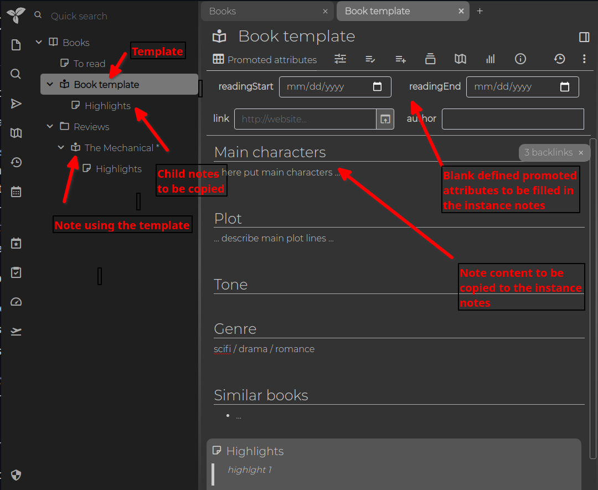

A template in Trilium serves as a predefined structure for other notes, referred to as instance notes. Assigning a template to a note brings three main effects:
#isInheritable=false are
inherited by the instance notes, although only inheritable attributes are
further inherited by the children of the instance notes.A typical example would be a "Book" template note, which might include:

An instance note is a note related to a template note. This relationship means the instance note's content is initialized from the template, and all attributes from the template are inherited.
To create an instance note through the UI:
For the template to appear in the menu, the template note must have the
#templatelabel. Do not confuse this with the ~template relation,
which links the instance note to the template note. If you use workspaces,
you can also mark templates with #workspaceTemplate to
display them only in the workspace.
Templates can also be added or changed after note creation by creating
a ~template relation pointing to the desired
template note.
To specify a template for child notes, you can use a ~child:template relation
pointing to the appropriate template note. There is no limit to the depth
of the hierarchy — you can use ~child:child:template,
~child:child:child:template, and so on.
From a visual perspective, templates can define #iconClass and
#cssClassattributes, allowing all instance notes (e.g., books)
to display a specific icon and CSS style.
Explore the concept further in the demo notes, including examples like the Relation Map, Task Manager, and Day Notes.
Additionally, see default note title for
creating title templates. Note templates and title templates can be combined
by creating a #titleTemplate for a template
note.